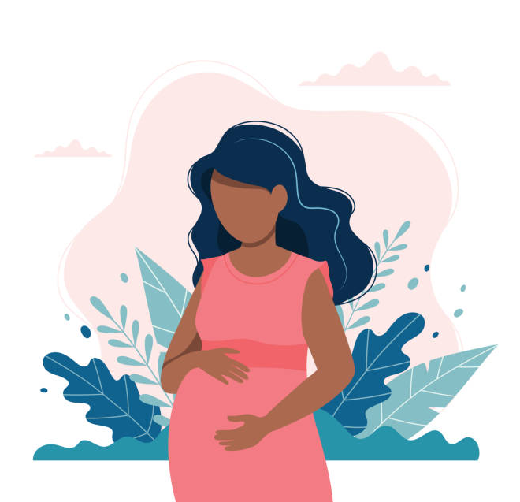

Acesso a saúde
O Ministério da Saúde propõe assegurar à mulher o direto ao planejamento reprodutivo e atenção humanizada à gravidez, ao parto e ao puerpério (pós-parto) e, às crianças, o direito ao nascimento seguro e ao crescimento e desenvolvimento saudáveis. A gestação é um fenômeno fisiológico e, por isso, sua evolução se dá, na maior parte dos casos, sem intercorrências. Apesar desse fato, existe parcela pequena de gestantes que, por serem portadoras de alguma doença, sofrerem algum agravo ou desenvolverem problemas, apresentam mais probabilidade de evolução desfavorável – seja para o feto como para a mãe.


Obrigado por esse entendimento. Agora sei mais sobre o que realmente é vestibular
barbizinha2007
Um cara qualquer